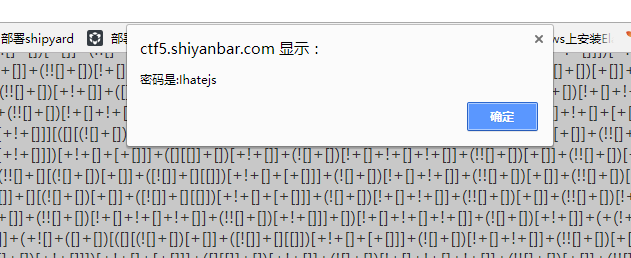

web安全第一阶段能力验证题目Writeup
做web开发肯定对于web安全需要有一定的理解与基础，以下是学完基础的小作业，记录下过程。
打开之后网页发现没表单什么的，这时候就想起应该要查看源码或者抓个包分析一下了
打开源码之后发现果然有flag
难度：1星 知识点：页面源码查看
题目是一个验证码计算，发现写入结果是长度被限制了，我们修改html表单input的maxlength限制就可以了
<input type="text" class="input" maxlength="4">
难度：1星 知识点：JavaScript代码绕过
根据提示
$what=$_GET['what'];
echo $what;
if($what=='flag')
echo 'flag{****}';
接受到一个key为what，value为flag的参数就可以抓到flag了
因为是get请求，所以我们在url后面加上?what=flag就行了
http://120.24.86.145:8002/get?what=flag
难度：1星 知识点：GET参数提交
根据提示
$what=$_POST['what'];
<br>
echo $what;
<br>
if($what=='flag')
<br>
echo 'flag{****}';
<br>
我们这里使用postman来构造post提交，首先头部伪造很重要，刚开始我直接在body里面设置了what=flag，发现并没有效果，因此我们可以看chrome的network看法request header，并改造相似的请求头，勾选post请求，发送，抓到flag。
难度：1星 知识点：POST参数提交
根据提示
$num=$_GET['num'];
if(!is_numeric($num))
{
echo $num;
if($num==1)
echo 'flag{**********}';
}
从提示我们可以指导，get请求的参数必须满足两个条件
- 不是数字
- 值等于1
根据php弱类型的特点我们可以知道，如果一个数值和字符串进行比较的时候，会将字符串转换成数值，根据php字符串转换成数字的规则
例如 “1a”转换成数字就是1，因此该题的解决方式是http://120.24.86.145:8002/get/index1.php?num=1a
难度：1星 知识点：PHP弱类型
很调皮的一个页面，一直在弹窗，点击F12也无法查看源代码，这时候应该需要用到burpsuite进行抓包，这里使用了Repeater模块，将抓到的请求包发送到Repeater，对请求进行一步一步研究，如下如所示，
发现有一个有一些奇怪的符号，这个很明显涉及到编码问题，如果熟悉的人一眼就会看出其实这就是Unicode编码，我们可以直接把这个编码发送到Burpsuite的Decoder进行解码，也可以在线找unicode解码，直接只用Burpsuite最方便。
难度：1星 知识点：查看页面源码、Unicode编码
有表单，提交密钥，第一感觉是要暴力破解呀，看了下源码之后，没什么思路，那就对请求过程进行抓包吧，使用Burpsuite的Repater对post过程进行一步一步跟踪，发现返回的值有一个编码，如下图:
直接原样输入未解码的字符串即可过关。
难度：1星 知识点：抓包、base64编码
根据提示
<?php
function GetIP(){
if(!empty($_SERVER["HTTP_CLIENT_IP"]))
$cip = $_SERVER["HTTP_CLIENT_IP"];
else if(!empty($_SERVER["HTTP_X_FORWARDED_FOR"]))
$cip = $_SERVER["HTTP_X_FORWARDED_FOR"];
else if(!empty($_SERVER["REMOTE_ADDR"]))
$cip = $_SERVER["REMOTE_ADDR"];
else
$cip = "0.0.0.0";
return $cip;
}
$GetIPs = GetIP();
if ($GetIPs=="1.1.1.1"){
echo "Great! Key is *********";
}
else{
echo "错误！你的IP不在访问列表之内！";
}
?>
从提示我们可以知道，我们伪造请求头的HTTP_CLIENT_IP或HTTP_X_FORWARDED_FOR或REMOTE_ADDR可以抓到flag
直接让上述的一个等于1.1.1.1就可以抓到flag了
难度：1星 知识点：抓包、HTTP请求头伪造
根据提示可以知道:
You don't have permission to access / on this server.
Please make sure you have installed .net framework 9.9!
Make sure you are in the region of England and browsing this site with Internet Explorer
要抓到flag必须满足一下几个条件
- .net framework版本9.9
- 只接受英国区域以及it浏览器
直接使用burp拦截，查询相关资料可知修改useragent，修改user-agent为Mozilla/5.0 (MSIE 9.0;.NET CLR 9.9)
Accept-Language:en-gb可以解决，如下如图所示:
难度：1星 知识点：抓包、HTTP请求头伪造
刚访问的时候，发现，突然出现了一大串乱码，经常做爬虫的人肯定很熟悉这种数据格式，这是jsfuck，就是混效过后的js，在日常爬虫当中，一般都是用node进行大块解析运行，在这里，我们复制这一串代码到控制台就可以执行了，或者直接执行js脚本

难度：1星 知识点：jsfuck代码执行
总结
- Web攻击的本质，就是通过HTTP协议篡改应用程序
- burpsuite是一个很好的工具